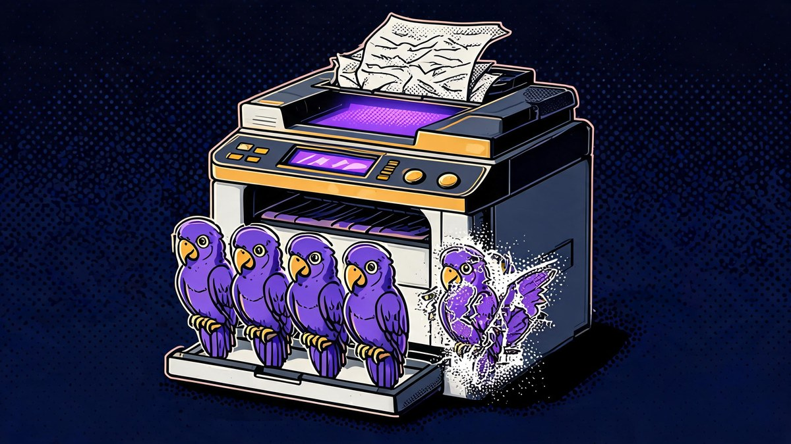

What Challenges Does Generative AI Face With Respect to Data? 7 Verified Problems for 2026
The honest answer is that generative AI has not run out of data - it is running out of the kind of data that made it good: free, high-quality, legally clean, human-made text and images. What challenges does generative AI face with respect to data is no longer a quiz-question curiosity in 2026; it is the defining bottleneck of the industry, and the seven challenges below are each backed by named research, court records or regulatory fines rather than speculation.
Generative AI systems learn everything from data, which makes data quality the single biggest determinant of how good, how fair, and how safe the output is. The challenges covered here are: running out of high-quality public data, overfitting on low-quality data, bias baked into training corpora, privacy and consent violations, copyright lawsuits, data poisoning attacks, and the cost of getting data ready at all. Each section explains what the challenge is, what the verified evidence says, and what it means for how AI behaves.
Quick answer: Generative AI faces seven data challenges in 2026: (1) scarcity - the stock of public high-quality human text is projected to be fully consumed between 2026 and 2032 (Epoch AI); (2) overfitting - models memorize noise instead of learning patterns; (3) bias - training data over-represents some groups and erases others; (4) privacy - models were trained on scraped personal data without consent, drawing a €15 million GDPR fine; (5) copyright - a $1.5 billion settlement and a pending NYT case have made training data a legal minefield; (6) poisoning - attackers can corrupt web-scale training data for as little as $60; (7) cost - 74% of enterprises struggling to scale AI blame data readiness (Deloitte).
Table of Contents
- The short answer
- How I picked the seven challenges: three tests
- 1. Running out of high-quality data
- 2. Overfitting on low-quality data
- 3. Bias and fairness baked into training data
- 4. Privacy, consent and the deletion problem
- 5. Copyright, lawsuits and the licensing gold rush
- 6. Data poisoning and the integrity attack
- 7. Cost and the enterprise data-readiness gap
- The strongest counterargument, answered
- What to actually do before 2027
- FAQs
- The Bottom Line
The short answer
Generative AI faces a data problem on every side of the pipeline: not enough clean public data left to scrape, legal danger in the data that does exist, quality decay as the web fills with AI-generated content, and enterprise data that is mostly not ready for AI use. The era of improving models primarily by swallowing more free human text is ending, and the industry has responded with three imperfect escape routes - recycling existing data for multiple epochs, generating synthetic data, and paying for proprietary sources. None of these routes is risk-free, which is why data challenges - not chip supplies or model architecture - are now the binding constraint on generative AI progress.
How I picked the seven challenges: three tests
I applied three tests to separate real challenges from conference-slide cliches. First, the primary-source test: every challenge needed at least one peer-reviewed paper, court filing, official fine or named-survey finding behind it - no vibes, no vendor whitepapers. Second, the 2026-relevance test: each challenge had to be actively shaping decisions this year, not a retired problem from 2023. Third, the mechanism test: for each challenge I verified that the claimed harm follows plausibly from the data problem, not just correlation in a press release.
The seven that survived cover the full pipeline - supply (scarcity), quality (overfitting, bias), legality (privacy, copyright), integrity (poisoning) and economics (cost). We deliberately excluded weaker candidates such as "data storage limits" (cheap) and "multimodal data gaps" (rapidly closing per the same Epoch analysis that quantified text scarcity), because they failed the relevance or mechanism test. Two challenges on the margin - labeling-worker conditions and watermarking arms races - are referenced inside other sections where the evidence is thinner.
1. Running out of high-quality data: the ceiling is arithmetic, not hype
The most-cited quantitative study on this question comes from Epoch AI, whose paper "Will we run out of data?" projects that models will be trained on datasets roughly equal in size to the available stock of public human text data between 2026 and 2032 - a window we are now inside, with the median year of full utilization at 2028. The same paper estimates the indexed web held around 510 trillion raw tokens in 2024, but only about 100 trillion tokens survive quality adjustment, because just 10-40% of deduplicated web data can be used for training "without significantly compromising performance." Demand has been growing roughly 4x per year; supply of fresh quality text does not.
What counts as "high-quality" is itself functional: the Epoch researchers define a dataset as higher quality if training on it produces better performance, and they anchor on Common Crawl pipelines where the best result comes from pruning to roughly 10% of the raw crawl. The behavioral evidence that labs feel the squeeze is considerable. The New York Times reported that OpenAI transcribed more than one million hours of YouTube videos using its Whisper tool when it faced a shortage of reputable English text. Ilya Sutskever, OpenAI's former chief scientist, told the NeurIPS 2024 conference that "pretraining as we know it will end." And content owners now sell access: Reddit reportedly books data-licensing revenue of roughly $130 million a year - about 10% of its total revenue - from deals with Google and OpenAI reportedly worth around $60 million per year each.
What happens when the easy data runs out?
Labs pursue three escape routes, each with documented side effects. Repetition: training for multiple epochs on the same data buys an estimated 3-15x effective supply, with diminishing returns after roughly four to five passes. Synthesis: generating training data with AI itself - OpenAI was reported in mid-2024 to be generating on the order of 100 billion words per day, within a year approaching the estimated total of high-quality words in Common Crawl. Purchase: licensing private archives, which converts scarcity into a moat that favors incumbents. The wall, to be precise, constrains free public human text - it is not a wall on total tokens, and no frontier lab has yet published a model regression it attributes to data exhaustion.
2. Overfitting: when the model memorizes noise instead of learning
Overfitting is the classic failure mode where a machine-learning model "learns the training data too well, memorizing specific examples including their noise and idiosyncrasies" rather than the general patterns underneath. In generative AI this shows up as verbatim regurgitation of training text, brittle behavior on novel inputs, repetitive outputs, and confident answers to questions the model never actually understood. The duality is documented in peer review: large language models are "capable of both remarkable generalization and brittle, verbatim memorization of their training data" - the same network, two behaviors, and low-quality data pushes the balance toward the second.
The strongest commercial evidence that data quality beats data quantity is Microsoft's Phi family. The phi-4 technical report describes a 14-billion-parameter model "developed with a training recipe that is centrally focused on data quality," and the Phi-3 Mini (3.8B parameters) outperformed models many times its size - a result the team attributes to "textbook-quality" curation rather than scale. The phi-1 code model was introduced under the literal title "Textbooks Are All You Need." The lesson generalizes: a smaller model trained on carefully curated data can beat a larger model trained on raw web sludge, which is why curation, deduplication and filtering have become core engineering disciplines rather than afterthoughts.

What is the risk of overfitting on low-quality data?
The model learns the errors. A corpus heavy in duplicated, SEO-spun or machine-generated text teaches statistical artifacts as if they were facts; the model then reproduces those artifacts with fluency and confidence. Regularization techniques, aggressive deduplication and curated fine-tuning datasets mitigate this, but they cannot fully repair a poisoned foundation - which is why the quality floor of training data, not the model architecture, sets the ceiling on output quality. This is also why the same exam question keeps phrasing it as the "risk" of overfitting on low-quality data: the risk is that the garbage becomes grammar.
3. Bias and fairness: the dataset is the mirror with warped glass
Bias in generative AI begins as a data-composition problem. Training corpora over-represent English, Western viewpoints, male authors and certain occupations, and under-represent nearly everyone else; a model trained on that distribution reproduces it. The evidence is quantified. A 2023 study on AI-generated images of professionals found men represented in 76% of the images and women in only 8%. Research published in PNAS in 2025 found that "explicitly unbiased" large language models still form biased downstream decisions - surface-level debiasing does not remove the learned associations. Earlier work documented persistent anti-Muslim bias in LLM outputs, linking associative stereotypes in training text to harmful outputs about Muslims.
What makes fairness genuinely hard is that bias compounds through a feedback loop. Researchers warned in 2025 that if AI-generated images depicting amplified stereotypes contaminate the training data of future models, next-generation image models could become systematically more biased - the model's warped output becomes tomorrow's training input. Fixing this is not as simple as deleting offensive rows: aggressive filtering can degrade capability, representation does not guarantee fairness, and evaluation itself introduces new choices about what counts as fair. The 2026 research community now treats bias mitigation as a benchmarked, multi-objective problem (BiasFreeBench, February 2026) rather than a solved cleanup step.
What is one challenge in ensuring fairness in generative AI?
Biased or unrepresentative training data is the canonical answer: when the data over-represents some groups and under-represents or distorts others, the model's outputs inherit and can amplify those skews. The deeper challenge is that removing bias from data risks degrading what the model learned from that same data, and the amplification loop means today's fixes can be silently undone by tomorrow's AI-contaminated web. Fairness is therefore a continuous measurement problem, not a one-time data scrub.
4. Privacy and consent: scraped first, asked never
Most generative AI training data is scraped from the public web, and the US Congressional Research Service stated it plainly: "For generative AI, most training data are scraped from publicly available web pages before being repackaged and sold." Publicly available is not the same as consented - the people whose names, photos, health discussions and contact details sit inside those crawls never agreed to become training data, and European regulators have made clear that GDPR applies fully to AI training on public data. The enforcement record now exists: Italy's data-protection authority banned ChatGPT in March 2023, restored it a month later after OpenAI added an age gate and a training opt-out for European users, and then fined OpenAI €15,000,000 in December 2024 over violations including the lack of an appropriate legal basis for collecting personal data to train its systems. Clearview AI accumulated €50 million-plus in European fines (€30.5 million from the Dutch DPA in 2024, €20 million from France's CNIL) for building a facial-recognition database from billions of scraped images.
The technical core of the problem is memorization: models verbatim-retain fragments of training text and can be attacked into revealing them. Carlini and colleagues extracted 604 memorized sequences from GPT-2 containing names, phone numbers and email addresses, and the 2023 follow-up demonstrated extraction from a production ChatGPT-class model. Deletion is the unsolved half: a person can ask for their data to be removed from a dataset, but removing its influence from billions of trained parameters - machine unlearning - remains a research problem, with security literature showing unlearning mechanisms can themselves leak information. The 2026 compliance landscape (EU AI Act obligations live since August 2025, enforcement powers active since August 2026, India's DPDP Act phasing in) is turning what was a philosophical complaint into an engineering requirement: provable data provenance and consent trails.
Can you remove your personal data from a trained AI model?
Usually not, in any verifiable way. Your data can be excluded from future training runs and opt-out registries exist, but if a model already trained on it, the influence is baked into parameters; "machine unlearning" research is young, approximate methods are hard to verify, and security researchers have shown some unlearning procedures leak information themselves. No major provider currently offers a publicly verifiable unlearning guarantee - which is why regulators are pushing upstream: consent and lawful basis before training, not deletion after.
5. Copyright: the $1.5 billion wake-up call
Training data has become a courtroom battleground, and 2025-2026 produced the first real precedents. Anthropic settled a authors' class action for $1.5 billion in September 2025 after a judge ruled that training Claude on legally purchased books was fair use but that storing millions of pirated books in a central library was not - the piracy claims survived toward trial. The New York Times v. OpenAI and Microsoft case (filed December 2023) escalated in July 2026 when publishers accused OpenAI of hiding evidence, and on September 1, 2026, US Department of Justice attorneys filed a brief in the Southern District of New York supporting OpenAI's fair-use defense; a ruling is expected in the coming months, and anyone who tells you they know the outcome is guessing.
The market's answer arrived faster than the courts': pay for the data. Reddit reportedly licenses its content for roughly $130 million a year; Axel Springer's OpenAI deal was reported at an estimated $25-30 million over three years; News Corp's multiyear pact was reported at more than $250 million; and even AI-music firm Suno settled with labels on terms that include launching licensed models in 2026. The EU AI Act now requires general-purpose AI providers to publish a summary of training content and a copyright policy - obligations in application since August 2, 2025. The practical effect: free public data now carries a legal-risk premium, and exclusive licensed corpora may become the moat that decides which labs can afford to keep training.
Is it legal to train AI on copyrighted content?
The honest state of the law in late 2026: partially settled, mostly contested. One US court has held that training on legally acquired books can be fair use (Anthropic), while the same case found pirated-library storage was not, and that finding survived toward trial. The NYT v. OpenAI case - with the DOJ now supporting OpenAI - is expected to set the widest precedent, but the ruling had not landed at publication time. In the EU, training on copyrighted works is not banned, but providers must now publish training-content summaries and respect rights-holder opt-outs. Treat any flat "it's legal" or "it's illegal" claim as marketing.
6. Data poisoning: corrupting the textbook, not the student
Data poisoning is an adversarial attack where "corrupted or biased data is inserted into a model's training, fine-tuning, retrieval, or tools" - the AI equivalent of slipping false pages into a student's textbook. The landmark feasibility result came from Nicholas Carlini and Andreas Terzis, whose IEEE S&P 2024 paper showed that poisoning web-scale datasets is practical: by manipulating as few as a few dozen domains in Common Crawl - for as little as $60, affecting 0.01% of a dataset - an attacker can plant backdoors that survive training. Follow-on research (the BALD framework, May 2024) extended backdoor attacks to LLM-enabled decision systems, and the enterprise angle is direct: any RAG pipeline or fine-tuning job that ingests web-adjacent content inherits this attack surface.
The slower-burn integrity problem is contamination by AI itself. A Nature paper (Shumailov et al., July 2024) found that training models on recursively generated data causes "model collapse" - a degenerative process where models progressively lose information about the true data distribution, with the tails (rare but important knowledge) vanishing first. The finding is contested in an important way: follow-up work (Gerstgrasser et al., 2024) showed collapse strikes when synthetic data replaces real data, while accumulating both keeps models stable. Either way, the web's growing share of AI-generated text raises the cost of every future crawl, and no crawler can currently prove that what it scraped was human-made.
What is data poisoning in generative AI?
It is the deliberate insertion of corrupted, biased or backdoored content into a model's training or retrieval data so the finished model behaves in ways the attacker wants - misclassifying, hallucinating on trigger phrases, or obeying hidden instructions. Research shows web-scale poisoning is cheap and practical (one peer-reviewed IEEE S&P 2024 study put demonstration cost at roughly $60), and defenses - deduplication, provenance tracking, anomaly filtering - reduce but do not eliminate the risk.
7. Cost and the enterprise readiness gap: clean data is expensive data
The visible cost of AI is chips; the invisible cost is data labor. The global data-labeling and annotation market was valued at $18.6 billion in 2024 and is projected to roughly triple by the early 2030s, and unit pricing spans $0.05-$0.20 for simple image labels to $2-$10 per complex annotation task. Licensing adds another layer - the Reddit, Axel Springer and News Corp deals above convert what used to be free into recurring operating expense. Then comes compute: the IEA projects electricity consumption from data centers and AI roughly doubling, and US data centers directly used about 17 billion gallons of water in 2023 - which is why data-center proposals now face municipal pushback from New York to Malaysia, where fewer than 18% of data-center water-usage applications were approved.
For enterprises the challenge inverts: they are not scraping data, they are drowning in their own, and it is not AI-ready. Deloitte's State of Generative AI in the Enterprise research found 74% of organizations struggling to scale AI cite data readiness as a top barrier; a Gartner survey of 1,203 data-management leaders found 63% either do not have, or are unsure they have, the data-management practices AI requires; McKinsey's State of AI research shows adoption surged past 78% of organizations using AI in at least one function while few reach maturity. RAG and fine-tuning pipelines inherit every problem in this article at company scale - stale content, duplicates, PII in old documents, unclear ownership - and "garbage in, garbage out" stops being a joke when the garbage is your customer records.
| Data challenge | Core problem | Verified evidence (2024-2026) | Who feels it most |
|---|---|---|---|
| Scarcity | Public high-quality text stock is finite | Epoch AI: full utilization 2026-2032; only 100T quality-adjusted tokens vs 510T raw | Frontier labs |
| Overfitting | Models memorize noise and artifacts | Peer-reviewed duality of generalization vs verbatim memorization; Phi-4's quality-first recipe | Model builders |
| Bias | Skewed representation reproduces and amplifies | 76%/8% gender split in AI professional images; PNAS 2025 "explicitly unbiased" models still biased | Everyone downstream |
| Privacy | Scraped personal data, no consent, unremovable | €15M OpenAI fine (Dec 2024); 604 GPT-2 sequences extracted; EU AI Act live | Users, providers, regulators |
| Copyright | Ownership of training content is contested | $1.5B Anthropic settlement; NYT v. OpenAI pending with DOJ support (Sep 2026) | Publishers, labs |
| Poisoning | Training data can be weaponized cheaply | IEEE S&P 2024: web-scale poisoning practical for ~$60; Nature 2024 model collapse | Crawler operators, RAG builders |
| Cost | Labeling, licensing and compute stack up | $18.6B labeling market; 74% cite data readiness (Deloitte); 63% data-management gap (Gartner) | Enterprises |
Key takeaway: The seven challenges compound rather than compete - the same web corpus is simultaneously running out (scarcity), degrading in quality (overfitting, bias, collapse), legally radioactive (privacy, copyright) and attackable (poisoning), which is why data readiness - not compute - is where most AI initiatives stall in 2026.
The strongest counterargument, answered
The serious counterargument says the data ceiling is a non-problem: multimodal sources (video, audio, code) remain vastly untapped, synthetic generation has already scaled to reported tens of trillions of tokens, and every year filtering techniques extract more value from the same corpus - so the "wall" keeps receding as fast as models approach it. This view has real support: the Epoch paper itself estimates video uploads alone represent enormous untapped token supply, and the 2026 model releases kept coming from labs that did not publicly report any data shortage.
The response is that this argument changes the subject from quantity to quality and legality. Multimodal expansion does not create more verified, consented, human-written text - it creates more data needing the same curation, with the same copyright exposure and the same collapse risk when the ratio of AI-generated content rises. Synthetic data works "where outputs are relatively easy to verify, such as mathematics, programming, and games" (Epoch's own conclusion), but cannot conjure new facts about the world, and model-collapse research suggests naive full-replacement pipelines degrade silently. The wall recedes, but it does not disappear - and every meter of retreat is likely paid for in compute, curation labor and legal fees, which is precisely the cost challenge in section 7.
What to actually do before 2027
For enterprises and builders, each challenge maps to a concrete preparation step, and none requires exotic technology. The list below sequences them by leverage.
- Audit data provenance now. Document where every training or RAG corpus came from, under what legal basis - the EU AI Act's training-content summary obligation is already in application, and buyers increasingly ask.
- Deduplicate and filter before you fine-tune. The Phi results show curation beats scale at small data volumes; dedup also shrinks the poisoning surface that the IEEE S&P 2024 study demonstrated.
- Test for bias with benchmarks, not vibes. Use published suites (Wino Bias-style probes, BiasFreeBench) on your fine-tuned models and log results per release.
- Assume extraction is possible. If personal data went into a fine-tune, treat the model as containing that data; apply the same access controls to model endpoints as to the raw documents.
- License rather than scrape where the content is commercial. The settlement and fine record of 2024-2026 shows the cost of guessing wrong on rights now exceeds the cost of licensing.
- Keep a human-data floor. When mixing synthetic data, accumulate rather than replace real data - the Gerstgrasser result shows this single design choice separates stability from collapse.
FAQs
?What challenges does generative AI face with respect to data?
Seven verified challenges: scarcity of high-quality public training data (Epoch AI projects full utilization of public human text between 2026 and 2032), overfitting on low-quality data, bias embedded in unrepresentative corpora, privacy violations from scraping personal data without consent, copyright litigation (including a $1.5 billion Anthropic settlement and the pending NYT v. OpenAI case), data poisoning attacks that cost as little as $60 to execute, and the high cost of making enterprise data AI-ready (74% of scaling-blocked organizations cite data readiness, per Deloitte).
?What is one challenge in ensuring fairness in generative AI?
Biased or unrepresentative training data: models trained on corpora that over-represent some groups reproduce and can amplify those skews - one 2023 study found AI-generated professional images showed men in 76% of outputs and women in only 8%. The deeper difficulty is that filtering bias out of data can degrade model capability, and "explicitly unbiased" models still form biased downstream decisions, per 2025 PNAS research, so fairness requires continuous measurement rather than a one-time data cleanup.
?What is the risk of overfitting on low-quality data?
The model memorizes the noise instead of learning the pattern: it reproduces duplicated, erroneous or machine-generated artifacts with fluent confidence, performs well on training-like inputs and fails on anything genuinely new, and can regurgitate verbatim training text. Peer-reviewed research documents this duality - "remarkable generalization and brittle, verbatim memorization" in the same models - and Microsoft's Phi program shows the fix: curation-heavy, textbook-quality data lets a 14B-parameter model beat far larger rivals.
?Will generative AI run out of training data?
Free, public, high-quality human text: effectively yes, within a predictable window - Epoch AI's analysis projects training demand will meet the available stock of public human text between 2026 and 2032, with only about 100 trillion quality-adjusted tokens available against 510 trillion raw. Total data including synthetic, multimodal and licensed sources is not running out, which is why labs now spend on licensing (Reddit reportedly earns about $130 million a year) and generate synthetic data, accepting new risks - diminishing returns from repetition and model collapse when synthetic data replaces real data.
?Does generative AI use personal data without consent?
Largely yes, historically: the US Congressional Research Service notes most generative-AI training data is scraped from public web pages and repackaged, without the subjects' knowledge. European regulators have pushed back with real money - Italy's Garante fined OpenAI €15 million in December 2024 over training-data processing violations, and Clearview AI accumulated over €50 million in EU fines for scraping-based facial recognition. EU rules applying since August 2025 require general-purpose AI providers to document training-content sources.
?Can you remove your data from a trained AI model?
From the dataset, yes; from the trained model, usually not in any verifiable way. Machine unlearning - removing a person's influence from model parameters - remains an open research problem, and security research has shown some unlearning procedures can themselves leak information. Regulators are responding by moving the requirement upstream: lawful basis and consent before training, because deletion after training is technically unreliable.
?Is it legal to train generative AI on copyrighted content?
Partially settled, mostly contested as of late 2026. A US court held training on legally purchased books could be fair use in the Anthropic case, but the same ruling left piracy claims alive toward trial and produced a $1.5 billion settlement. The New York Times v. OpenAI case - now with a US Department of Justice brief supporting OpenAI filed September 1, 2026 - is expected to set the broadest precedent, but no final ruling had landed at publication. The EU requires training-content summaries and copyright policies from AI providers; the market has responded with licensing deals reported from $25-30 million (Axel Springer) to $250 million-plus (News Corp).
?What is data poisoning in generative AI?
An adversarial attack that inserts corrupted, biased or backdoored content into training, fine-tuning or retrieval data so the finished model misbehaves on attacker-chosen triggers. A peer-reviewed IEEE S&P 2024 study by Carlini and Terzis demonstrated that poisoning web-scale datasets is practical - manipulating a tiny fraction of domains for roughly $60 - and enterprise RAG pipelines that ingest web-adjacent content inherit the same risk. Defenses include deduplication, provenance tracking and anomaly filtering, but none is complete.
The Bottom Line
Generative AI's data challenges are not one problem but seven, and they compound: the good public data is running out, what remains is legally radioactive, models memorize whatever noise it contains, the people it describes never consented, attackers can corrupt it for pocket change, and making enterprise data usable is where most AI budgets quietly die. The honest 2026 summary is that data - not compute, not chips, not architecture - is the binding constraint, and the labs that win this decade will be the ones that treat data supply the way oil companies treat reserves: measured, audited, legally clean and continuously replenished. For everyone else, the seven checks above are the difference between building on bedrock and building on landfill.
Sources verified October 4, 2026. This article explains technical and legal developments for general audiences; it is not legal advice.
Sources
- arxiv.org - Villalobos et al., "Will we run out of data? Limits of LLM scaling based on human-generated data" (Epoch AI)
- epoch.ai - Can AI scaling continue through 2030?
- nature.com - Shumailov et al., "AI models collapse when trained on recursively generated data"
- arxiv.org - Gerstgrasser et al., "Is Model Collapse Inevitable?"
- usenix.org - Carlini et al., "Extracting Training Data from Large Language Models" (604 sequences, GPT-2)
- not-just-memorization.github.io - Nasr, Carlini et al., "Scalable Extraction of Training Data from (Production) Language Models"
- arxiv.org - Carlini & Terzis, "Poisoning Web-Scale Training Datasets is Practical" (IEEE S&P 2024)
- congress.gov - Congressional Research Service, "Generative Artificial Intelligence and Data Privacy: A Primer"
- garanteprivacy.it - Italian DPA fine on OpenAI (December 2024)
- cnil.fr - CNIL penalty against Clearview AI
- researchgate.net - Microsoft Phi-4 Technical Report (data-quality-first recipe)
- arxiv.org - "Textbooks Are All You Need" (phi-1)
- arxiv.org - "Hidden Bias in the Machine: Stereotypes in Text-to-Image Models" (amplification loop)
- semanticscholar.org - "The invisible women: uncovering gender bias in AI-generated images of professionals" (76%/8%, Oct 2023)
- pnas.org - "Explicitly unbiased large language models still form biased decisions" (2025)
- arxiv.org - BiasFreeBench: a benchmark for mitigating bias in LLMs (Feb 2026)
- reuters.com - Reuters reporting: Axel Springer-OpenAI licensing deal (Dec 2023)
- wsj.com - WSJ: OpenAI-News Corp content deal (May 2024)
- arstechnica.com - Reddit data-licensing revenue reporting
- quinnemanuel.com - Emerging AI Legal Risks update, July 2026 (Suno settlement, licensed models)
- legal500.com - Copyright in 2025: Anthropic settlement analysis
- mediapost.com - DOJ brief supporting OpenAI in NYT case (Sep 2026)
- iea.org - IEA electricity and data-centre projections
- deloitte.com - State of Generative AI in the Enterprise (data readiness barrier)
- gartner.com - Gartner survey of 1,203 data-management leaders (63% data-management gap)
- mckinsey.com - The State of AI (adoption vs maturity)
- hurix.com - Data labeling market size ($18.6B, 2024)
- neurips.cc - Ilya Sutskever, Test-of-Time Award talk (Dec 2024): "Pretraining as we know it will end"